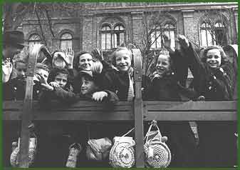

After 1945 and until 1948 Budapest was an important station of the emigration route for surviving Jews. In the spring of 1949 the Zionist organizations were dissolved, putting an end to Jewish emigration from Hungary to Israel.